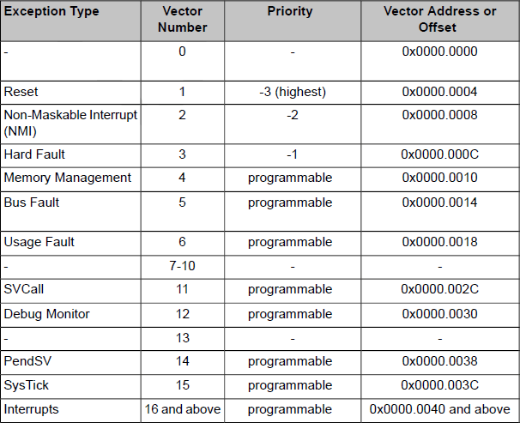

ARM NVIC

- 2025 · 02 ARM NVIC
ARM mimarisinde bulunan özel bir kontrol mekanizması olan NVIC (Nested Vectored Interrupt Controller), Exception ve kesmeleri yönetmek için kullanılmaktadır. Bu durumlar belirli önceliklere sahiptir. Reset exception en yüksek önceliğe sahiptir. Sisteme gelen bir reset isteğinin ardından bütün işlemler durdurulur ve sistem yeniden başlatma durumuna girer. Bazı exception ve interrupt taleplerinin önceliği manuel olarak ayarlanabilmektedir, bu sayede önceliklendirme konfigüre edilebilir.
- System Exceptions (Reset, NMI, SVCall, PendSV, SysTick)
- Fault Exceptions (Hard Fault, MemManage Fault, UsageFault, BusFault)
- Interrupts (IRQ)
System Exceptions
Reset: Software veya hardware olarak alınabilen resetler bu exception üzerinden vektör tablosundaki ilk duruma döner. Reset Handler kaydına bakılarak o adresten priviliged seviyede ve Thread modunda çalışmaya başlar. Vektör tablosunda en yüksek önceliğe sahiptir.
NMI (Non Maskable Interrupt): NMI bir çevrebiriminden veya yazılımdan tetiklenebilmektedir. Reset’den sonra en yüksek öncelikli exception’dur. Hil test 3 üzerinden yazılımsal olarak tetiklenerek handler testi gerçekleştirilmektedir. NMI adından da anlaşıldığı üzere maskelenemez ve Reset dışında başka bir exception tarafından kesilemez. Genellikle kritik sistem hataları veya kesintileri ile ilişkilendirilir, bu nedenle önemli durumlarda kullanılır. CPU'nun çalışmasını durduracak bir sıcaklık anormalliği veya güç kaynağı sorunları gibi durumlarda tetiklenir.
SVCall (Supervisor Call): SVC komutu ile tetiklenmektedir. İşletim sistemlerinde kullanıcı uygulamalarından çekirdek (kernel) fonksiyonlarına ve cihaz sürücülerine erişmek amacıyla çekirdek seviyesine çağrıda bulunmak için kullanılmaktadır.
PendSV (Pendable Service): İşletim sistemlerinde eğer herhangi bir exception aktif durumda değil ise Context Switching işlemi için kullanılmaktadır.
SysTick: Sistem zamanlayıcısı tarafından 0'a ulaştığında üretilen exception’dur. Yazılım tarafından da bu exception’u üretmemiz mümkündür. İşletim sistemlerinde işlemci bu exception’u sistem tick’i olarak kullanabilir. Kapatılması öngörülemez hatalara sebebiyet verir.
Fault Exceptions
Mem Fault: Mem Fault, bellek koruma mekanizmalarıyla ilgili olarak ortaya çıkan hatalardır. Bu tür hatalar, bir programın veya işlemin, erişim izni olmayan bir bellek alanına erişmeye çalıştığında meydana gelir. Bellek koruma, sistemin güvenliğini sağlamak ve hatalı veya kötü niyetli kodların bellek alanlarına izinsiz erişimini engellemek için kullanılır.
Örnek:
- Bir programın, yalnızca okuma izni olan bir bellek alanına yazmaya çalışması.
- Geçersiz bir bellek adresine erişim girişimi.
Bus Fault: Bus Fault, bellek sisteminde veri yolu (bus) üzerinde veya verilerin yığın (stack) yapısında işlenmesi sırasında meydana gelen hatalardır. Bu hatalar, veri iletiminde veya bellek erişiminde sorunlar yaşandığında ortaya çıkar.
Örnek:
- Bellek adresinin yanlış olması veya geçersiz bir adres üzerinden veri iletmeye çalışılması.
- Yığın belleğinde (stack) bir taşma (overflow) durumu.
Usage Fault: Usage Fault, bir komutun gerçekleştirilmesi sırasında ortaya çıkan kullanım hatalarıdır. Bu hatalar, programın beklenmedik bir durumla karşılaştığında veya geçersiz bir komut çalıştırmaya çalıştığında meydana gelir.
Örnek:
- Tanımlı olmayan bir komutun çalıştırılması (Undefined instruction).
- Bellek erişiminde, verilerin hizalanmasıyla ilgili kurallara uyulmaması (Illegal unaligned access).
- Komutun geçerli bir duruma girmemesi (invalid state on instruction execution).
- Exception dönüşü sırasında hata durumu.
Hard Fault: Hard Fault, exception (istisna) ele alma sürecinde meydana gelen hatalardır. Eğer MemManage, BusFault ve UsageFault gibi istisnalar aktif edilmemişse ve bu hatalardan biri çalışma zamanında oluşursa, bu durum Hard Fault tarafından ele alınır. Ayrıca, vektör tablosundan işleyici adresinin alınması (vector fetching) ve debug olaylarıyla ilgili hatalar da Hard Fault oluşturabilir.
Örnek:
- Bellek yönetimi hatası veya bellek erişim hatası gibi durumların ele alınmaması.
- Vektör tablosundan geçersiz bir adresin alınması.
- Debugging sırasında beklenmedik bir hata meydana gelmesi.
Interrupts (IRQ)
Interrupt (kesme), bir olayın meydana gelmesi durumunda işlemcinin mevcut görevini durdurarak, öncelikli bir işlemi gerçekleştirmesine olanak tanıyan bir mekanizmadır. Kesme, genellikle donanım bileşenleri (örneğin, bir sensör, buton veya zamanlayıcı) tarafından tetiklenir ve işlemcinin dikkatini çekmek için kullanılır.
Kesmeler çevre birimleri veya yazılım tarafından üretilmektedir. Çevre birimleri işlemci ile konuşmak için kesmeleri kullanmaktadır.
Vector Table
Vektör tablosu Stack Pointer’in reset değerini ve bütün exceptionların servis edilmesi (exception service) için işleyicilerin (handler) başlangıç adresini tutan bir tablodur. Exception işleyicileri C fonksiyonu olarak yazılabilmektedir ve doğal olarak biz de bu tabloya exception servis edildiğinde çağrılması için bu fonksiyonların adreslerini girmekteyiz. Sistem reseti sonrasında vektör tablosu varsayılan olarak 0x00000000 adresinde yer almaktadır. Vektör tablosu daha sonrasında istenildiği takdirde yazılım tarafından VTOR (Vector Table Offset Register) register’ı kullanılarak başka bir adrese yerleştirilebilmektedir.
Vektör tablosundaki ilk vektör Stack Pointer (SP)’in başlangıç değerini tutar. Yani işlemci reset aldıktan sonra ilk olarak PC (Program Counter) register değerine 0x00000000 adresi yüklenir ve daha sonra bu adresteki değer de stack işaretçisine yüklenir. Genellikle bu ayarlamalar startup kodu ile yapılmaktadır. Startup kodu derleyiciye göre değişse de genel çerçevesi ve teorisi aynıdır.
Stack işaretçisi ayarlandıktan sonra Reset vektörü olarak belirtilen işleyici (Reset Handler) çağrılır. Reset işleyicisi içerisinde sistem ilklendirmesi yapılır ve daha sonrasında main fonksiyonu çağrılır. Bu aşamadan sonra program akışı main fonksiyonu içerisinde gerçekleşmektedir.
